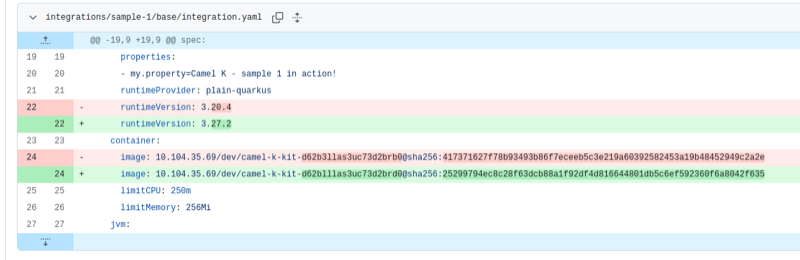
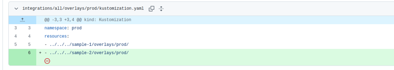

With Camel K version 2.9 we have enhanced the GitOps capability of the operator to run a builtin opinionated GitOps strategy. In this blog we are going to expand with a complete example and show how to enabled with a sample Camel application we build on an environment and we promote to another environment controlled with a gateway.
The process will be the following: a development team (the “citizen integrator”?) is in charge to develop and test a given Camel application on a development environment. At every change, the operator will be in charge to create the GitOps structure that a CICD tool (ArgoCD in our case) will be watching. The CICD is in charge to deploy on a production environment. A Pull Request is issued so that a release manager can control, verify and also change any configuration that has to be delivered in the production environment. When the new Integration is tested and ready to go, the release manager will merge the PR and the CICD pipeline will react consequently releasing the application changes on the production environment.
Please, note that this is a Github based example, hence the gateway we use is the Pull Request mechanism. Other Git technologies may have similar gateways.
Prepare a Github repository
The first thing we need to do is to provide a Github repository. You can create one or reuse any existing repository you want to use as a place where to store your GitOps configuration. We’ll use this one: https://github.com/squakez/ck-gitops-integrations - it’s public to let you inspect how it works, but we advise you to work with private repositories instead.
As we’re on Github we are creating an action that is in charge to create a new PR when there is any change on a given branch. This is nice as it avoids any manual intervention and will create a Pull Request when any change is detected on the branch where the operator will push the GitOps changes. You may use any other mechanisms or skip it entirely if you have manual procedures in place.
Note that we are controlling the branch named cicd and we’re creating (or updating) a pull request towards branch main: this is our gateway. The name of the branch is up to you. Something interesting to note is that we may even put in place a Continuous Deployment strategy, skipping the Pull Request gateway and releasing directly from any branch instead.
name: Auto PR from cicd to main
on:
push:
branches:
- cicd
jobs:
create_pull_request:
runs-on: ubuntu-latest
steps:
- name: Checkout repository
uses: actions/checkout@v3
- name: Create Pull Request
uses: peter-evans/create-pull-request@v5
with:
token: ${{ secrets.GITHUB_TOKEN }}
commit-message: "Automated PR from cicd branch"
branch: cicd
base: main
title: "feat(ci): new deployment ready"
body: "Camel K operator wants to add or update one Integration. Please, review and merge to make it start the production workflow"
draft: false
Important: you need to enable “workflow permission” write action in project settings. Also, allow the creation of pull request flag.
Prepare the development cluster
We are using a local Kubernetes cluster for testing. For this reason we are separating the development and the production environment via namespaces. In a real scenario you can replicate this structure or you can even have separate clusters for development and for production environments. We expect to have a namespace dev and a namespace prod.
Let’s create a secret token to be able to read/write to this repository (content read/write on the given repo). The tokes in something you can generate accessing your Git developer settings:
kubectl create secret generic my-blog-token --from-literal token=github_pat_... -n dev
Let’s install a development operator on the dev namespace (or the development cluster, depending on your configuration): use the same registry that will be eventually used by the production operator (or any other sync mechanism you may have between a dev and prod container registry).
Let’s create a Configmap where we store environment specific configuration used by the Integration we are going to run:
kubectl create cm my-cm --from-literal=my.env=dev -n dev
We can therefor run an application, for example:
apiVersion: camel.apache.org/v1
kind: Integration
metadata:
name: sample-1
spec:
flows:
- route:
from:
parameters:
period: 30000
steps:
- setBody:
simple: Hello Camel from {{my.env}} - {{my.property}}
- log: ${body}
uri: timer:yaml
traits:
camel:
properties:
- my.property=Camel K - sample 1 in action!
runtimeProvider: plain-quarkus
runtimeVersion: 3.20.4
container:
limitCPU: 250m
limitMemory: 256Mi
mount:
configs:
- configmap:my-cm
gitops:
branchPush: cicd
enabled: true
overlays:
- prod
secret: my-blog-token
url: https://github.com/squakez/ck-gitops-integrations
Please notice the gitops trait configuration. We have provided here the branch where we want to push the GitOps Kustomize overlays produced by Camel K operator, instructing how many overlays to create (only prod in our example, but you can add more). We had to provide the secret which is used by the operator to authenticate the Git repository to read the repo content and push the changes to the branch.
Let’s run the Integration to the dev namespace and let the operator build and run:
kubectl apply -f sample-1.yaml -n dev
A new Integration is under build. As soon as it is created it will run and can be validated. Monitor via:
$ kubectl get it -w -n dev
NAME PHASE READY RUNTIME PROVIDER RUNTIME VERSION CATALOG VERSION KIT REPLICAS
sample-1 Running True plain-quarkus 3.20.4 3.20.4 kit-d62b3llas3uc73d2brb0 1
You can verify the log, just to make sure the correct Configmap is stored:
sample-1-65d7b95bb6-xrzj2 integration 2026-02-01 15:11:07,912 INFO [org.apa.cam.qua.cor.CamelBootstrapRecorder] (main) Apache Camel Quarkus 3.20.3 is starting
...
sample-1-7f59d9b46c-8x2xl integration 2026-02-01 15:11:18,825 INFO [cam.yaml:8] (Camel (camel-1) thread #1 - timer://yaml) Hello Camel from dev - Camel K - sample 1 in action!
...
As soon as the application is built, the operator will push the GitOps overlay to the repository provided in the configured branch. Our Github action is also in charge to create a new Pull Request, which will control the gateway to production environment. If you’re not happy with the result of the development, you can continue testing. The operator will take care to automatically update the PR, so that you can decide to merge it only when you’re happy with the result in development.
Let’s go now to the repository pull request user interface. Verify the PR is created and merge it. Note that you could change values in overlay configuration for prod, for example, raising resource limits or changing the Configmap location. You can find more details about the structure and the configuration in the official Camel K GitOps documentation.
Let’s merge merge the PR, although this is not yet going to produce any effect. We’re missing the CICD pipeline watching the GitOps repo!
Prepare the production cluster
Let’s install a Camel K operator on a prod namespace (alternatively, a production cluster): remind to use the same registry used for the development operator.
We also need to create the resources (i.e., the Configmap) expected by the Integration. For the sake of this test, we have a single property:
kubectl create cm my-cm --from-literal=my.env=prod -n prod
For the production environment we need to install also a CICD tool which is in charge to watch the GitOps configuration and apply when a change is detected. We’re using ArgoCD, here the steps to install:
kubectl create namespace argocd
kubectl apply -n argocd -f https://raw.githubusercontent.com/argoproj/argo-cd/stable/manifests/install.yaml
You may monitor the installation procedure by checking the argocd namespace:
kubectl get pods -n argocd -w
Login the argocd CLI (which simplifies the operations) and set the default context for the kubectl to the ArgoCD namespace, where the :
argocd login --core
kubectl config set-context --current --namespace=argocd
Instruct your ArgoCD to use the secret you’ve previously used also for Camel K (it will need to access the repository content): it can be a different access token (likely only read permissions in this case).
argocd repo add https://github.com/squakez/ck-gitops-integrations.git \
--username camel-k \
--password github_pat_...
You need to create now a new configuration for your application, which in our case is the Integration folder in the GitOps repo. Assuming you are using the argocd CLI:
argocd app create ck-integrations --repo https://github.com/squakez/ck-gitops-integrations.git --path integrations/sample-1/overlays/prod --dest-server https://kubernetes.default.svc --dest-namespace prod --sync-policy automated --auto-prune --self-heal
Notice that we are using the path to the “sample-1” integration prod overlay. We are creating a Continuous Delivery pipeline as we expect to automatically synchronize when we detect any change on the Git repo on the main branch (which is the default). Let’s list the app:
$ argocd app list
NAME CLUSTER NAMESPACE PROJECT STATUS HEALTH SYNCPOLICY CONDITIONS REPO PATH TARGET
argocd/ck-integrations https://kubernetes.default.svc prod default Synced Healthy Auto-Prune <none> https://github.com/squakez/ck-gitops-integrations.git integrations/sample-1/overlays/prod
Nice. We can verify that the application starts immediately and we can also verify the configuration is the one expected in the prod environment:
sample-1-65d7b95bb6-xrzj2 integration 2026-02-01 15:23:07,912 INFO [org.apa.cam.qua.cor.CamelBootstrapRecorder] (main) Apache Camel Quarkus 3.20.3 is starting
...
sample-1-65d7b95bb6-xrzj2 integration 2026-02-01 15:23:45,216 INFO [cam.yaml:8] (Camel (camel-1) thread #1 - timer://yaml) Hello Camel from prod - Camel K - sample 1 in action!
...
However, the most interesting thing has to come. Let’s do some now some new development. In our simple scenario it will be just changing the text or upgrading the Camel version. In a real situation it can be any change that you normally do in your Camel application lifecycle (upgrade scenario included!). Now that we have set the pipeline up we can benefit from the automation and have the change promoted to the production environment in less than a minute.
Let’s patch the runtime version in order to pick a more recent Camel release. We need to do this on development environment. The operator will build and run a new application in the development environment. When complete it will push the new container change to the Git repo which you can approve after a round of quality assurance test (in our case, we can just check manually the application has started with the correct Camel version). If all is good we can merge the change and the ArgoCD pipeline will be in charge to upgrade the production application as soon as we have merged the changes.
kubectl patch integration sample-1 -n dev \
--type=merge \
-p '{
"spec": {
"traits": {
"camel": {
"runtimeVersion": "3.27.2"
}
}
}
}'
The build should have started and you can monitor it accordingly:
$ kubectl get it -n dev -w
NAME PHASE READY RUNTIME PROVIDER RUNTIME VERSION CATALOG VERSION KIT REPLICAS
sample-1 Building Kit plain-quarkus 3.27.2 3.27.2 kit-d62blllas3uc73d2brd0
...
sample-1 Running True plain-quarkus 3.27.2 3.27.2 kit-d62blllas3uc73d2brd0 1
Okey, let’s make sure the change was picked up:
sample-1-754b45f6d4-slxl5 integration 2026-02-01 15:45:38,218 INFO [org.apa.cam.qua.cor.CamelBootstrapRecorder] (main) Apache Camel Quarkus 3.27.2 is starting
sample-1-754b45f6d4-slxl5 integration 2026-02-01 15:45:38,222 INFO [org.apa.cam.mai.MainSupport] (main) Apache Camel (Main) 4.14.3 is starting
...
sample-1-754b45f6d4-slxl5 integration 2026-02-01 15:45:46,323 INFO [cam.yaml:8] (Camel (camel-1) thread #1 - timer://yaml) Hello Camel from dev - Camel K - sample 1 in action!
Perfect, this is what we had expected. So, we can check the PR that the operator should have created on our behalf:

This is exactly what we were expecting. We’re also happy with our testing so, we want to have the change in prod as soon as possible. Click the merge button and after a few minutes (depending on the polling configuration on ArgoCD operator) you will also see the change reflected in your production Camel workflow:
sample-1-65d7b95bb6-c7bgv integration 2026-02-01 15:51:21,994 INFO [org.apa.cam.imp.eng.AbstractCamelContext] (Shutdown thread) Apache Camel 4.10.7 (camel-1) is shutting down (timeout:45s)
...
sample-1-65d7b95bb6-c7bgv integration 2026-02-01 15:51:22,114 INFO [io.quarkus] (Shutdown thread) camel-k-integration stopped in 0.122s
- sample-1-65d7b95bb6-c7bgv
...
sample-1-5bf99c96c8-569n4 integration 2026-02-01 15:51:36,521 INFO [org.apa.cam.qua.cor.CamelBootstrapRecorder] (main) Apache Camel Quarkus 3.27.2 is starting
sample-1-5bf99c96c8-569n4 integration 2026-02-01 15:51:36,525 INFO [org.apa.cam.mai.MainSupport] (main) Apache Camel (Main) 4.14.3 is starting
...
sample-1-5bf99c96c8-569n4 integration 2026-02-01 15:51:45,229 INFO [cam.yaml:8] (Camel (camel-1) thread #1 - timer://yaml) Hello Camel from prod - Camel K - sample 1 in action!
This is really amazing, as, once you’ve setup and polished the pipeline, it will be a matter of doing the regular development and testing, with an automatic upgrade of the production (or any other environment) workflow promotion.
Multiple integrations
Another possibility offered by Camel K operator is to provide a single repository for multiple integrations. If you have a microservices oriented architecture, or, in general, you want to control all your Integrations in a single GitOps repository, then, the all profile is there for you. Let’s stick to the previous example, and let’s create another Integration that we pretend are doing something different (we change the log trace text for the sake of simplicity and the firing period):
apiVersion: camel.apache.org/v1
kind: Integration
metadata:
name: sample-2
spec:
flows:
- route:
from:
parameters:
period: 50000
steps:
- setBody:
simple: Hello Camel from {{my.env}} - {{my.property}}
- log: ${body}
uri: timer:yaml
traits:
camel:
properties:
- my.property=Camel K - sample 2 in action!
runtimeProvider: plain-quarkus
runtimeVersion: 3.20.4
container:
limitCPU: 250m
limitMemory: 256Mi
mount:
configs:
- configmap:my-cm
gitops:
branchPush: cicd
enabled: true
overlays:
- prod
secret: my-blog-token
url: https://github.com/squakez/ck-gitops-integrations
Let’s store this in a file, sample-2.yaml and build via kubectl apply -f sample-2.yaml -n dev. The application will run in development environment and a new PR will be issued with the new Integration listed and also we can note the all profile which is listing the new Integration:

That means we can create a CICD pipeline which contains all our Integrations. Don’t merge the PR yet. Before, let’s delete the previous pipeline and create a new ArgoCD pipeline pointing to the all path:
argocd app delete ck-integrations
argocd app create ck-integrations --repo https://github.com/squakez/ck-gitops-integrations.git --path integrations/all/overlays/prod --dest-server https://kubernetes.default.svc --dest-namespace prod --sync-policy automated --auto-prune --self-heal
We can now merge the PR, and, within a few minutes (depending on the polling configuration on ArgoCD operator) we should see both integrations running in the prod namespace:
$ kubectl get it -n prod -w
NAME PHASE READY RUNTIME PROVIDER RUNTIME VERSION CATALOG VERSION KIT REPLICAS
sample-1 Running True plain-quarkus 3.27.2 3.27.2 1
sample-2 Running True plain-quarkus 3.20.4 3.20.4 1
And of course, you can add as many Integrations as you need. Also notice that each integration can have different parameters (in this case, the runtime).
Conclusion
It was a long blog and we haven’t covered yet 100% of the features available in the new Camel K GitOps strategy. We have developed an opinionated but flexible feature that leverage the Kustomize overlays feature to allow any CICD technology to capture the changes happening on a given environment. You can read more details in the Camel K GitOps documentation and learn how to:
- Run a single repository for multiple Camel applications
- Reuse the same Git repository used to build the Camel application (build from git feature)
- Develop a chain of GitOps environments
We’ll be happy to learn how you’re using this new feature, so, let us know via usual communication channels!